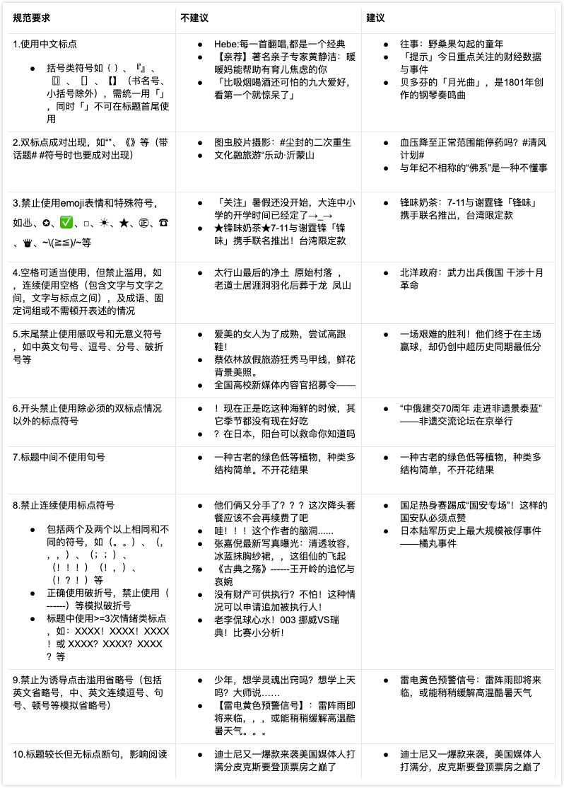

内容审核规范
内容审核是文章发表的第一道门槛。只有明确了什么内容不能发、什么行为会被处罚，才能自觉避开红线，提高文章审核通过率，从而获得更多推荐机会。
若内容被判定为包括但不限于标题党、低俗、广告、低质、反动违法等不合规范的问题时，平台将对违规内容进行展示量的干预、退回修改、退回不收录。
若内容严重违规，则会对帐号进行扣分或封号处理。
发文规范
干细胞NEWS致力于为广大内容创作者提供和谐友善的创作环境，为用户提供良好的阅读体验，共同打造健康有序的内容生态。平台的可持续发展，有赖于各位创作者的共同维护与支持。
真诚建议每位创作者在发文前仔细阅读本规范。如你发布的内容存在规范中提到的以下问题，将无法通过审核或被系统限制推荐范围，违规严重的帐号还将受到扣分禁言等处罚，甚至被封禁。请各位创作者严格遵守平台的内容创作规范，持续创作更多优质内容。
不符合内容规范，包括但不限于以下情况：
发布内容违反法律法规和相关政策
被认定为违反法律法规和相关政策的内容，包括但不限于：
违反宪法确定的基本原则；
危害国家统一、主权和领土完整的；
攻击、篡改、调侃我国政治制度和法律制度，与国家方针政策唱反调的；
泄露国家秘密，如国防、科技、军工等国家秘密，国家各级党政机关未公开的文件、讲话、专项工作等；
危害国家安全或者损害国家荣誉和利益的；
对涉及领土和历史事件的描写不符合国家定论的；
煽动民族仇恨、民族歧视，破坏民族团结，或者侵害民族风俗、习惯的；
破坏国家宗教政策，宣扬邪教的；
散布淫秽、色情、赌博、暴力，传播恐怖主义的；
煽动非法集会、结社、游行、示威、聚众扰乱社会秩序，破坏社会稳定的；
教唆、教授、组织他人进行违法乱纪活动的；
歪曲、丑化、亵渎、否定革命领袖、英雄烈士事迹和精神的；
侵害未成年人合法权益或者损害未成年人身心健康的；
侮辱或者诽谤他人，侵害他人合法权益的
以非法民间组织名义活动的；
危害社会公德，损害民族优秀文化传统；
含有法律、行政法规禁止的其他内容的。
内容涉及时政
违规发布时政类内容，包括但不限于：
不具备相关新闻采编、新闻信息发布资格的个人和机构，发布国家大政方针、时事动态、政治、军事、外交、经济等各类政策、规定等相关内容及相关评论。
违规发布社会新闻
被认定为违规发布社会新闻的内容种类包括但不限于：
不具备新闻采编、互联网新闻信息服务资质的个人、机构，发布内容涉及社会、民生等新闻信息和社会新闻评论类内容。
内容色情低俗
被认定为色情低俗的内容包括但不限于：
文字、图片、视频对性部位和性行为进行过度描述或展示；
对性部位和性行为进行暗示或内涵表述；
有明显的性挑逗、性骚扰、性侮辱或类似效果的画面、台词、音乐及音效的；
展示淫秽色情、渲染庸俗低级趣味的影视音乐作品；
具体展示卖淫、嫖娼、淫乱、强奸等情节的；
内容中含有色情交友、卖淫嫖娼、色情网站等违规信息的；
违背公序良俗的性观念，如性虐、恋物癖、捆绑等；
发布和传播其他有伤社会风化的内容；
内容含未成年人性行为、性暗示、儿童性剥削、展示或触摸未成年人特定部位的；
含营销推广内容或发布违规推广信息
被认定为含营销推广内容或发布违规推广信息的包括但不限于：
带有明显营销意图的二维码、个人联系方式（如手机号、QQ号、微信）、群联系方式（如QQ群、微信群）、第三方网站或网址、网盘链接等；
含有作者及他人联系方式，诱引读者与其联系的；
商业产品、品牌、活动的推广软文及广告；
文章配图或视频中插入营销推广信息，包括任何形式、与正文没有相关性的推广；
发布非权威股评、原油、黄金等投资类信息，引导关注或诱导投资的；
推广售卖两性、丰胸、增高等健康类产品和服务的；
攻击谩骂
被认定为含有攻击谩骂内容的，包括但不限于：
对部分地域的人员、习俗发表发布具有偏见性、污辱性、歧视性等的言论；
侮辱、诽谤、贬损、恶搞历史人物及其他真实人物的形象、名誉的；
侮辱、贬损他人的职业身份、社会地位、身体特征、健康状况的；
封面不合适
被认定为封面不合适的，包括但不限于：
使用二维码作为封面；
封面图片出现易引人不适内容的；
模糊不清晰的图片作为封面；
封面出现低俗等违规内容的；
封面含有营销推广内容或违规推广信息；
发布内容涉及侵权
发布内容涉及侵权，包括但不限于：
发布内容侵犯他人版权、名誉权、隐私权、品牌商标权等；
未经授权发布他人原创内容，侵犯他人知识产权；
抄袭、搬运其他作者在干细胞平台或其他平台的内容；
与平台已有内容高度相似
被判断为与平台已有内容高度相似的，包括但不限于：
上传发布的内容与平台其他作者已发布的内容高度相似；
内容格式不规范
被认定为内容格式不规范的，包括但不限于：
排版混乱：文章无段落，无标点；
语意不明：病句、错别字较多，有碍于读者理解文章的内容；
全文（包括视频）为外语、粤语、藏语、蒙语等且无翻译（字幕）。
文章不完整/不丰富，如：以图片为主体/图文夹杂的文章，图片少于3张；以文字为主体的文章，字数在200字以下（诗歌、短新闻等除外）；
视频音画低质，无声音或声画不同步，过半时间黑屏/白屏/花屏，视频时长过短等；
图集主题不明确、图片之间无关联；图片质量低、画面不清晰；
使用图集形式发布低质影视剧截屏；
前后内容没有衔接，与标题无关内容篇幅占比较大；
含有往期内容回顾，或前后回顾文章内容篇幅占比较大；
发布已过时效内容
被认定为已过时效的内容，包括但不限于：
旧闻新发：文章中提到的事件为很久之前发生的，特意隐去时间，误导他人是新近发生的事件；
内容发布时间与事件的发生时间相隔较远；
信息陈旧：事件发生新的进展，却仍在发布更新状态前的信息；
标题中有明确的时间限定词，如“今天”“本月”等，而文章发布时间与限定范围不符；
标题党
被认定为标题党的标题种类包括但不限于：
标题夸张
夸张式标题： 标题将感受、范围、结果、程度等夸张夸大描述，造成耸人听闻的效果；
悬念式标题： 标题滥用转折、隐藏关键性信息，营造悬念、故弄玄虚；
强迫式标题：标题采用挑衅恐吓、强迫建议等方式，诱导用户阅读；
题文不符
标题存在歧义 ：标题对要素信息的表达不清晰或不对称，形成冲突，对用户产生误导；
标题无中生有 ：标题捏造内容中不存在的人、物、情节，或用不确定消息诱导用户点击；
标题滥用名称： 标题滥用名称引起歧义，误导用户为社会时政负面或明星花边；
封面与标题不符： 封面图与内容完全不相关，或封面图结合标题易使读者产生误解；
标题未明确题材
影视、综艺、小说/故事、动漫、自制剧等题材的标题易产生歧义，对用户造成误导，需在标题中明确题材或剧名/书名等，如「小说：」、「影视：」、「《陈情令》：」、「《西安大追捕》：」，即使用题材为前缀时需明确到具体题材，如「农村剧：」而不是「农村：」，使用作品名称为前缀时需加书名号（《》）。
违背公序良俗
被认定为违背公序良俗的内容种类包括但不限于：
以恶搞方式描绘重大自然灾害、意外事故、恐怖事件、战争等灾难场面的；
宣扬不良生活方式和不良流行文化，表现消极颓废的人生观、世界观和价值观；
宣扬拜金主义和享乐主义的；
展示违背伦理道德的糜烂生活的；
宣传和宣扬丧文化、自杀游戏的；
以肯定、赞许的基调或引入模仿的方式表现打架斗殴、羞辱他人、污言秽语的；
为违背公序良俗或游走在社会道德边缘的行为提供展示空间的；
对未成年人进行言语暴力或孤立未成年人行为的
展示未成年人危险行为、危险玩具、对未成年人进行整蛊行为 等 危害未成年人安全的内容
内容失实
被认定为内容失实的包括但不限于：
违背科学常理的内容；
与已发生事实相悖的事件情节；
无中生有的内容或捏造谣言；
发布引人不适的内容
被认定为易引人不适的内容种类包括但不限于：
内容惊悚，多为恐怖灵异图片或灵异视频截图，比较惊悚的鬼怪、人尸等；
文章图片大量截取吃播、吃活物、体验恶心食物等易引起读者感官不适的；
引起强烈刺激的事物，如排泄物等；
密集排列、分布的事物；
物种本身具有令人不寒而栗的特征，大多数人会产生害怕心理的；
报导畸形人、动物，具有猎奇趣味；
内容不适合发布
除上述内容外，其他违反法律法规、相关政策、用户协议、平台规范、规则、声明等的内容。
标题创作规范
为打造健康、有价值的内容平台，干细胞NEWS平台持续加强内容生态建设。
标题，作为读者了解和选择阅读内容的第一步，对平台鼓励作者创作清晰、准确反映内容的优质标题，对于为获取点击而恶意误导用户或格式混乱不规范的标题，平台将持续严厉打击，一经发现，将不被系统推荐，严重违规情况将导致帐号被处罚。
不符合平台规范的标题情况，包括但不限于以下情况：
标题与正文原意有偏差
1、标题歧义
标题对易混淆的要素信息解释不清，或缺失主体信息，造成不对称，产生理解歧义
标题案例
原标题：《姚明因病抢救无效去世，各路明星发文悼念》
问题： 标题中未解释是作曲家姚明去世，对用户造成误导
修改后：《国家一级作曲家姚明因病抢救无效去世，各路明星发文悼念 》
原标题：《交警拦下超载导弹车，开出巨额罚单！司令要求放行被当成骗子》
问题：标题让用户误以为是发生在我国，实则与中国无关
修改后：《美国交警拦下苏联超载导弹车，开巨额罚单！司令要求放行被当成骗子》
原标题：《6年白等了？火箭放弃11+6不死鸟，三分46.2%莫雷都不给一份底薪》
问题：标题让用户误认为“11+6”是NBA的数据，实则不然
修改后：《6年白等了？火箭放弃不死鸟，三分命中46.2%莫雷都不给一份底薪》
影视、游戏、小说、故事、段子、动漫、自制剧等内容，使用社会时政新闻类标题，造成歧义
标题案例
原标题：《司机醉酒驾驶，挑衅警车，满载钢材飙车，酿成车祸警车扬长而去》
问题：内容为游戏视频，标题制造出疑似车祸新闻的现场
修改后：《欧洲卡车模拟2游戏：卡车司机满载钢材飙车，酿成车祸无法收场》
原标题：《刚建好的科技宫大楼崩塌，参加奥数的学生全部遇难，市民怒了》
问题：内容为影视片段，标题用社会新闻的口吻让用户误以为是真实事件
修改后：《影视：豆腐渣工程致大楼崩塌，里面学生全部遇难，市民怒了》
原标题：《男孩高考后跳楼自杀，因父亲在大柳树买了张北京户口》
内容：内容实则为虚构的故事
修改后：《故事：男孩高考后跳楼自杀，因父亲在大柳树买了张北京户口》
2、题文不符
标题与内容对信息主体的某项特征描述不一致，形成冲突，造成信息传达错误
标题案例
原标题：《父亲从庙会买的小碗，上台后不敢说价格，专家爆出价格：5900万！》
问题：内容中专家所述为另一真品的拍卖价格，标题让用户误以为是“小碗”的价格
修改后：《寻宝 | 父亲从庙会买的小碗为仿品，专家称正品价值5900万港币》
原标题：《中国小将独揽3冠！国际乒联：继丁宁之后，又一个大满贯世界冠军》
问题：内容为“有望成为国乒女队又一个世界冠军、大满贯选手的领军人物”，标题缺少“有望”这个关键信息，造成理解冲突
修改后：《中国小将独揽3冠！国际乒联：继丁宁之后，有望成为大满贯世界冠军》
原标题：《恒大金靴级射手正式离队，曾是欧洲联赛射手王，未来将叶落归根》
问题：“金靴级射手”是文章主角在葡超时期获得的殊荣，与中超、恒大均无任何关系，将不同时期的两个概念混淆在一起，引起用户误读
修改后：《恒大高薪外援J马正式离队，曾是欧洲联赛射手王》
标题无中生有，捏造内容中不存在的人、物、情节，态度、言论、结果、场景等
标题案例
原标题：《90后“中国女飞人”！广西小将百米破11秒，苏炳添：看来我真老了》
问题：内容中成绩未破11秒，苏炳添也并未说过此话
修改后：《90后短跑健将“女飞人”韦永丽，百米速度十一秒零七》
原标题：《面对如此厚颜无耻的渣女，涂磊终于忍无可忍，直接开骂了》
问题：内容中并没有标题所述涂磊的状态和行为
修改后：《面对情侣嘉宾之间的矛盾，涂磊耐心劝导》
原标题： 《勇士输给猛龙之后，又有一大将受伤，网友：这下勇士彻底凉了》
问题：内容中并未体现“网友”的态度，只是作者本人观点，有故意激起球迷不满嫌疑
修改后：《勇士输给猛龙之后，又有一大将伊戈达拉受伤，夺冠困难》
标题描述为确定事件，但内容为猜测、谣传事件，或通过疑问的方式表达不确定或确定为假的消息，使用户产生误解
标题案例
原标题：《<毒液2>定档，主演说漏嘴会有三部曲，和蜘蛛侠同时间线》
问题：内容是作者根据网上猜测汇总的臆断，并非事实
修改后：《<毒液2>或将定档10月，蜘蛛侠和反派屠杀可能参与》
原标题：《定了！美媒曝希伯特将加盟广东宏远！球迷戏称：又骗我们流量！》
问题：转会为爆料，“定了”让用户误认为确定事件
修改后：《美媒谣传希伯特将加盟广东宏远，球迷戏称：又骗我们流量》
原标题：《郭晶晶净身出户？郭晶晶和霍启刚离婚了？本人回应》
问题：实际上离婚为传闻，且当事人已辟谣
修改后：《郭晶晶净身出户？本人回应没有离婚，是假新闻》
3、封面与标题不符，让用户产生误解
封面图与内容完全不相关，或封面图结合标题易使读者产生误解
标题案例
原标题：《又一著名影星惨遭意外！年仅26岁，下半身不幸瘫痪，令人惋惜》
问题：文章封面图使用同样有车祸经历的胡歌的照片
修改后标题：《日本女演员黑谷友香遭遇意外，年仅26岁，下半身不幸瘫痪》
原标题： 《又传来坏消息！迪士尼童星博伊斯不幸身亡，仅仅20岁》
问题：视频封面图使用国内某名人葬礼现场图
标题格式不规范
1.标题未明确题材
影视、综艺、小说/故事、动漫、自制剧题材的标题易产生歧义，对用户造成误导，需在标题中明确题材或剧名/书名等，如「小说：」、「《陈情令》：」。
标题案例
原标题：《小黑蛇一直不醒，女子以为他冬眠了》
修改后：
《影视：小黑蛇一直不醒，女子以为他冬眠了》
《三生三世十里桃花：小黑蛇一直不醒，女子以为他冬眠了》
2、标题含有错别字或存在语病
标题含有错字、别字，以及标题不通顺等，影响阅读体验，包括但不限于以下情况：
成分残缺：《或年初上市，于日本开卖》
用词不当：《十代雅阁年初上市，于日本贩卖》
语序不当：《十代雅阁上市年初，于日本开卖》
搭配不当：《十代雅阁年初上市，于日本开卖，吸引了一大批汽车爱好者的眼睛》
结构混乱：《十代雅阁年初上市，于日本开卖，深受年轻人所喜爱》
修改后：《十代雅阁年初上市，于日本开卖，吸引了一大批汽车爱好者的关注》
3、标题未使用约定俗成的汉字用法
除专有名称需使用繁体字、异体字、外文等情况外，标题修改后使用标准普通话和规范汉字。
不建议：《十代雅閣年初上市，於日本開賣》
建议：《NBA史上9大过人动作欣赏》
4、标题含有谩骂词
标题中含有侮辱谩骂词语，或对性别、地域、身份等恶意攻击，语言粗鄙，引起用户反感。
不建议：
《戏精？婊气冲天的她今天又去参加双宋婚礼啦！》
《别吹牛逼，那真的很傻逼》
5、标题信息表达不全
标题过短，或无法体现内容，如使用数字、单个词语词组、无意义名称等，影响阅读。
原标题：《看这里！》、《886》
6、标题标点使用不规范
平台在鼓励优质标题创作和严厉打击各类标题党问题的同时，也发现部分创作者在标题的标点符号使用中存在不规范现象，影响作者的创作质量和用户的阅读体验。因此，平台对标题标点符号的使用，做了如下规范：
标题中允许出现的常用标点符号包括：
问号（？）、感叹号（！）、逗号（，）、冒号（：）、双引号（“ ”）、书名号（《》）、破折号（——）、竖线（｜）等
不符合平台规范的标点使用，文章将被限制推荐，包括但不限于以下情况：

标题低质问题不仅影响用户阅读体验，同时严重影响平台内容生态，干细胞平台将持续规范平台运营。希望各位创作者能遵守平台规范，杜绝发布、传播标题低质内容，共建健康有序的网络空间。
问答审核规范
提问的审核规范
优质问题的标准
真实客观 ：问题、描述应该是理性客观的，不带有偏向性的主观色彩。
表意明确：问题避免啰嗦、指意不明、没有针对性。
文字规范：用词、句式、标点正确。
问题有价值：问题有讨论价值，具有一定深度的更受欢迎；对他人有借鉴意义。
不合规的问题类型
含性诱导/暗示内容，涉及色情、低俗
含推广信息
含事实性错误、过于偏激的主观判断
含不雅内容（脏话、人身攻击等）
内容低质，无可讨论性
回答的审核规范
审核时间：
所有的回答都需进行审核，审核时长通常为 3-5 分钟，最长不会超过 24 小时。
审核标准：
优质回答的标准
回答逻辑清晰、有理有据（加上数据、图表、案例更佳）
语言生动易懂（深入浅出，降低阅读障碍）
语言个性化（有个人风格的回答更受欢迎）
不合规的回答内容
问题含性诱导/暗示内容，涉及色情、低俗
问题含推广信息
问题含事实性错误、过于偏激的主观判断
问题含不雅内容（脏话、人身攻击等）
问题内容低质，无可讨论性